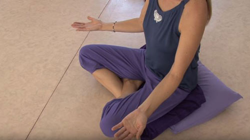

ナダブラーマ瞑想
ナダブラーマ瞑想は、ハミング音と手の動きによって、身体と心の間に調和をもたらす古代チベットの実践です。音と振動を通じて内なる自己とつながるように設計されており、深いバランスと静けさの感覚が得られます。
この瞑想を実践するには: オーディオをダウンロードし、以下のステップに従って聞いてください。
1. 準備
瞑想するために静かで快適な場所を見つけてください。背骨をまっすぐにしてリラックスした姿勢で座り、手は膝の上に置きます。目を閉じ、リラックスするために深呼吸を数回行います。

2. ステップ1: ハミング (30分)
「mmm」や「aaa」のような音を出し始め、体に振動が伝わるようにします。その音が体内で共鳴するようにします。ある時点で、ハミングが自然に続き、ただその振動を聞くだけになります。

3. ステップ2: 手の動き (15分)
3.1 前半 (7.5分): エネルギーを与える
最初の7.5分間、手のひらを上に向け、ゆっくりと円を描くように手を外側に動かします。動きはへそから始め、手を外側に伸ばして宇宙にエネルギーを与えているかのようにします。動きは穏やかでゆっくりと行います。
3.2 後半 (7.5分): エネルギーを受け取る
次の7.5分間は、手のひらを下に向けて動きを反転させ、ゆっくりと手を体に戻します。宇宙からエネルギーを受け取っていることをイメージし、そのエネルギーが体内に流れ込む感覚に集中します。

4. ステップ3: リラクゼーション (15分)
最後の段階では、すべての動きを止めて静かに座ります。体内のエネルギーと振動を観察し、深いリラクゼーションと内なる調和を楽しみます。